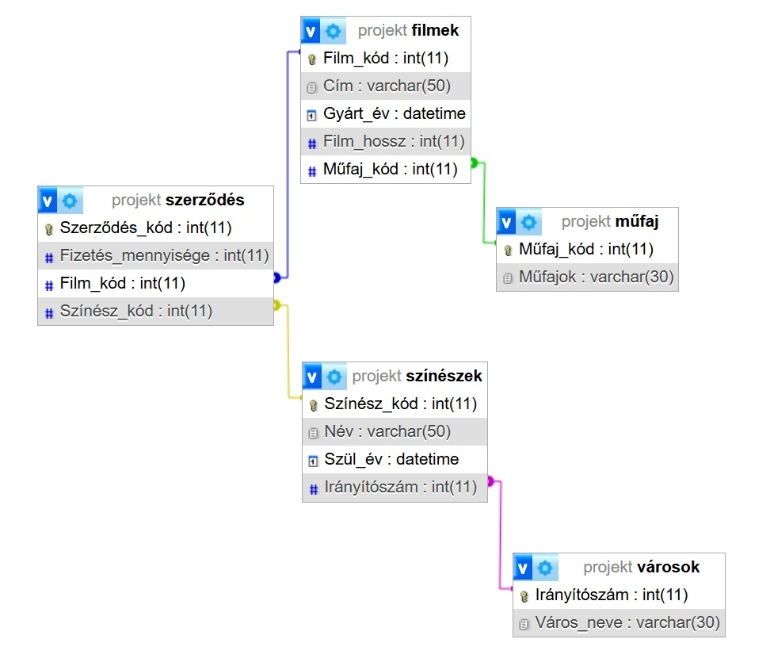
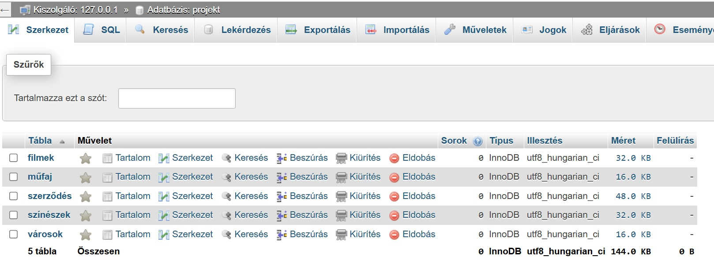

Szakmai alapok
Az adatbázis-kezelés alapjait az SQL nyelv segítségével sajátítottam el, ahol a hangsúlyt a relációs adatbázisok tervezésére és kezelésére helyeztük. Magabiztosan használom a különféle parancsokat a táblák és adatbázisok létrehozásához, emellett az adatbázisok tartalmát is magabiztosan kezelem, legyen szó új adatok rögzítéséről, a meglévők frissítéséről vagy a feleslegessé vált sorok törléséről.
A lekérdezések során rutinszerűen alkalmazok szövegkezelő és összesítő függvényeket, például statisztikai számításokat végzek a pontos adatszűrés és elemzés érdekében. Tanulmányaim legfontosabb részének a táblák összekapcsolását tartom, hiszen az elsődleges és idegen kulcsok használatával képes vagyok összetett adatstruktúrák felépítésére és kezelésére is.
Projekt - Filmes Adatbázis
Az adatbázis-kezelés projektben hárman dolgoztunk csapatban, célunk egy átfogó, filmes tematikájú relációs adatbázis megtervezése és megvalósítása volt. Olyan rendszert alakítottunk ki, amely képes kezelni a filmek alapadatait, a műfajokat és a színészeket, valamint a közöttük létrejövő szerződéseket és kifizetéseket is. A relációs szerkezet kialakítása során öt különálló táblát hoztunk létre: filmek, színészek, szerződés, műfaj és városok, amivel biztosítottuk az átláthatóságot és elkerültük az adatredundanciát.
A projekt legfontosabb eleme a szerződések táblája lett, amely idegen kulcsok segítségével köti össze a színészeket a filmekkel, rögzítve az adott szerephez tartozó kifizetéseket. A projekt készítése alatt végig együttműködtünk, folyamatosan egyeztetve a feladatok felosztásáról és az adatbázis-normalizálás lépéseiről, így végül egy stabil és bármikor bővíthető struktúrát sikerült létrehoznunk.

Önreflexió
A filmes adatbázis projekt során egy háromfős csapat tagjaként kellett közösen megoldanunk egy összetett projektet. A közös munka megtanított arra, mennyire fontos a pontos feladatfelosztás és a folyamatos kommunikáció egy projekt sikere érdekében.
Szakmai szempontból izgalmas kihívás volt a tanult adatbázis-építő parancsok és az adatbázis-normalizálás elméletét átültetni a gyakorlatba. A legnagyobb munkát a táblák közötti kapcsolatok logikai felépítése jelentette, sokat csiszoltunk az elsődleges és idegen kulcsok rendszerén, mire elértük a megfelelő, redundanciamentes struktúrát. Végül sikerült, hogy a tábláink stabilan kezelik az adatokat, és a lekérdezések is hibátlanul lefutnak. Ebből a projektből tanultam meg igazán, hogyan kell élesben felépíteni és használni egy adatbázist.
